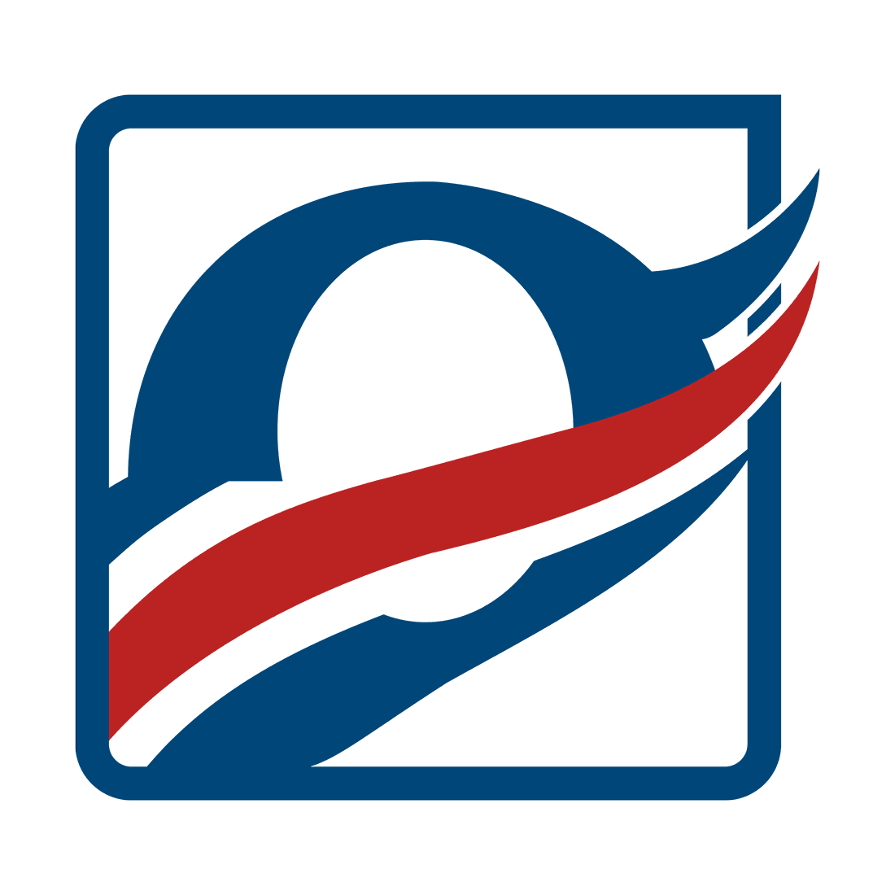
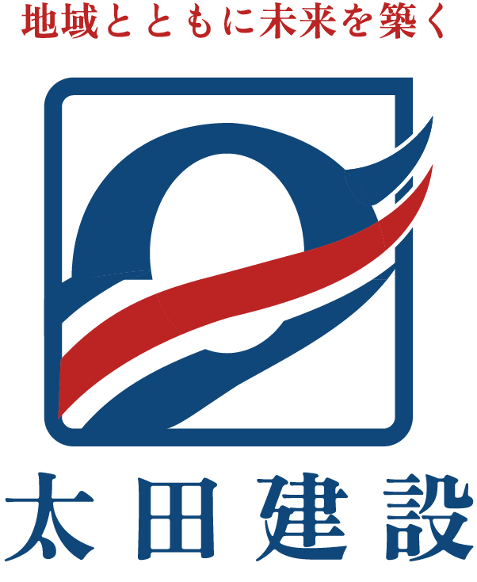
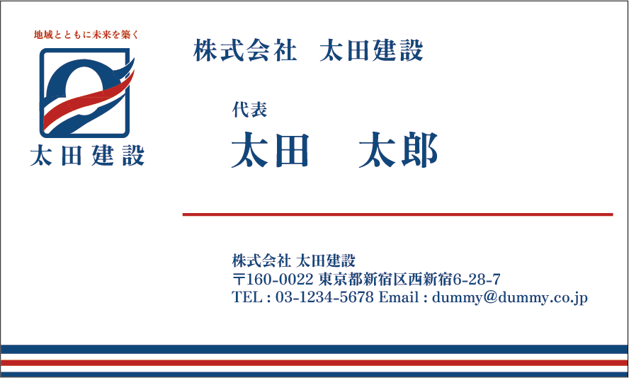
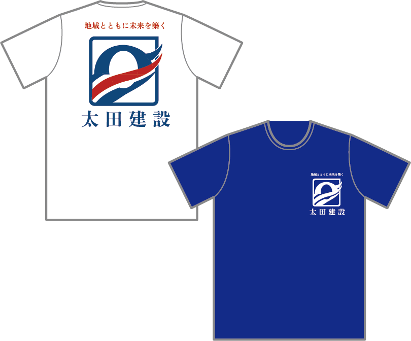

地域に寄り添い、街づくりを支える建設会社を想定して制作したロゴデザインです。 信頼感と安定感を大切にしながら、現代にも通用するシンプルで力強い表現を目指しました。
ブランド名
太田建設
制作目的
- 建設会社としての信頼感や安定感を視覚的に伝える
- 地域に根ざした企業として親しみやすさと誠実さを表現する
- 長く使えるシンボルを通して会社の認知向上につなげる
ターゲット
住宅や建築工事を依頼する個人のお客様や地域の事業者を中心に、 信頼感・実績・安心感を重視して建設会社を選ぶ層を想定しました。
コンセプト
地域に寄り添い、街づくりを支える建設会社を想定し、 「信頼性」と「発展性」を軸にロゴを設計しました。 安心感のある印象を大切にしながら、 未来へ向かう企業の姿が伝わるデザインを目指しています。
デザインについて
シンボルマークは頭文字の「O」をベースに構成し、 視認性と象徴性を両立した形に設計しました。 外枠のスクエアは建物や構造物をイメージし、 建設会社としての安定感と信頼性を表現しています。
内部の曲線は流れやつながりを表し、 地域や人との関係性を大切にする企業の姿を表現しました。 シンプルでありながら印象に残る構成を意識しています。
こだわったポイント
青を基調とした配色で信頼感や誠実さを表現し、 建設会社としての安心感を視覚的に伝えています。
赤いラインは道路やインフラを想起させる要素として取り入れ、 街づくりや発展、未来へ続く流れを象徴しています。 シンプルな形の中に動きを持たせることで、 堅実さと成長性の両立を意識しました。
看板や名刺、ユニフォームなど様々な媒体での使用を想定し、 小さく表示しても認識しやすい視認性を重視しています。
制作時間
デザイン 10h
制作日
2026年3月
ロゴタイプ

名刺

Tシャツ
